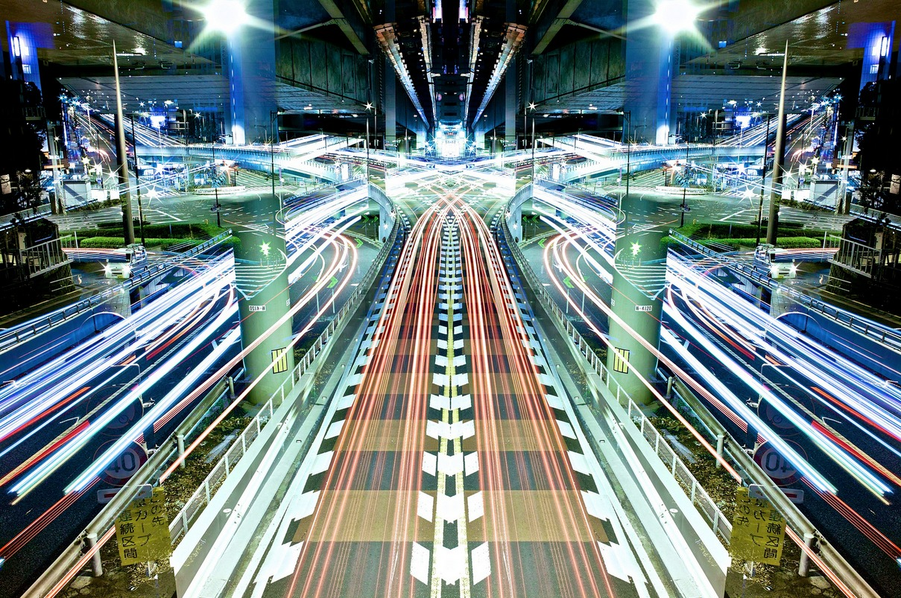
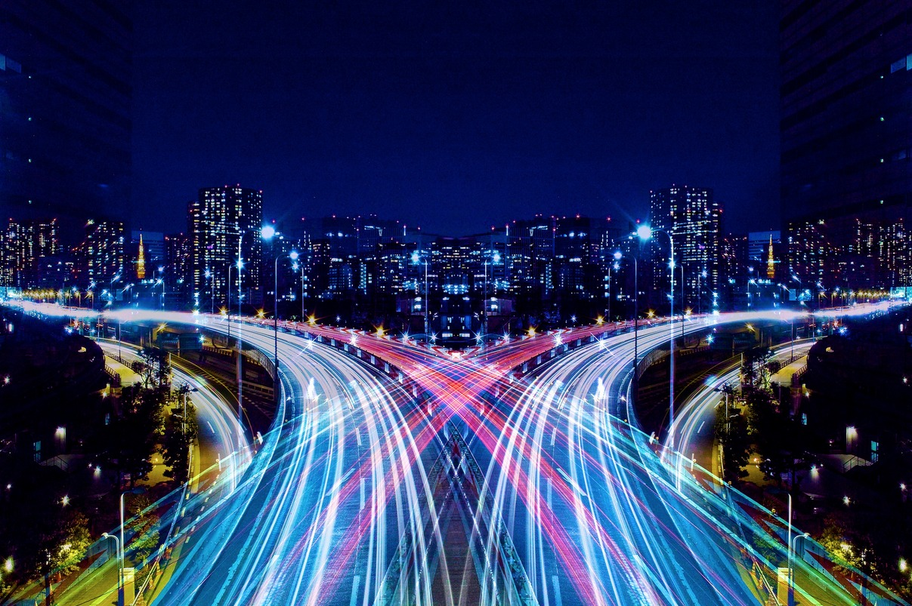

Mirror of Symmetry
Using mirrors and long exposures, Shinichi Higashi captures the movement, bright colors and architecture of Tokyo at night. View the entire Mirror of Symmetry set on Flickr.
Related - Tokyo Sky Drive “Take a journey through the city of Tokyo at night with this video filmed in HD on the Tokyo Monorail and horizontally mirrored.”